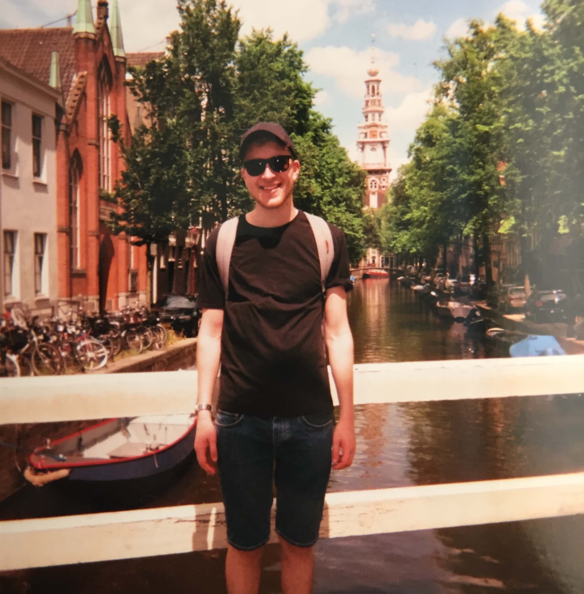

<div class="container-fluid">
	<div class = "row vertical-align">

		<div class = "col-md-8 lead"> 

			<p>
				My name is Ben and I'm a Physics graduate working as a Java developer for free coffee. Specifically, my work focuses on low-level interaction with Java Memory Management and Garbage Collection technologies. 
			</p>
			<p>
				For my MSci thesis, I built a Markov-Chain Monte Carlo algorithm to study quantum entanglement and its associated entropy. I then applied my algorithm to computationally verify topological properties of the Quantum Hall Effect - itself an exciting discovery which was awarded the 2016 Nobel prize in physics. More information on my research can be found on my projects page.
			</p> 

			<p> 
				In my free time I also enjoy creating websites and apps, as well as playing table tennis and bass guitar.
			</p>
		</div>
		<div class="col-md-4">
			
		</div>
	</div>
</div>